Landsat 8
30 m optical · the dNBR workhorse (NIR + SWIR2). Limit: 16-day revisit, cloud gaps.
A remote-sensing search for fire refugia: the unburnt patches that survive inside a fire perimeter, shelter seed and soil, and seed the recovery of the whole landscape. This report rebuilds the burn from Landsat 8, cleans it carefully, maps the fuels that carried it, and asks a sharper question than the official map answered — how much unburnt ground was never drawn?
Warming climate, a fire-primed Canterbury, and a legacy of cleared land now carrying gorse — the reasons this landscape burns, and why a vegetation map is the tool that lets us read it.
Fire weather is lengthening across eastern Aotearoa New Zealand. Hotter, drier summers push more days over the ignition threshold on the Port Hills. 📖 WMO
A century of clearance left exotic grassland and dense, oily gorse & broom — fast-drying, highly flammable fuel — sitting next to native scrub and pine. What grows where decides what burns. 📖 Wyse
A satellite only hands us reflectance numbers. Only a classification attaches a vegetation label to every pixel — and only then can we line up what burned against what grew there, and find the refugia. 📖 Meddens
Two of these were flagged by Dr de Klerk as strong technical work in A1 — they just never made it into the writing. Here they are, out loud: what was done, why, and what it costs.
No single satellite tells the whole story. An optical camera sees colour but not through smoke; radar sees through cloud but not colour; a thermal sensor catches the flames themselves. Reading the Port Hills fire meant using four of them together — each with its own strength and its own blind spot.
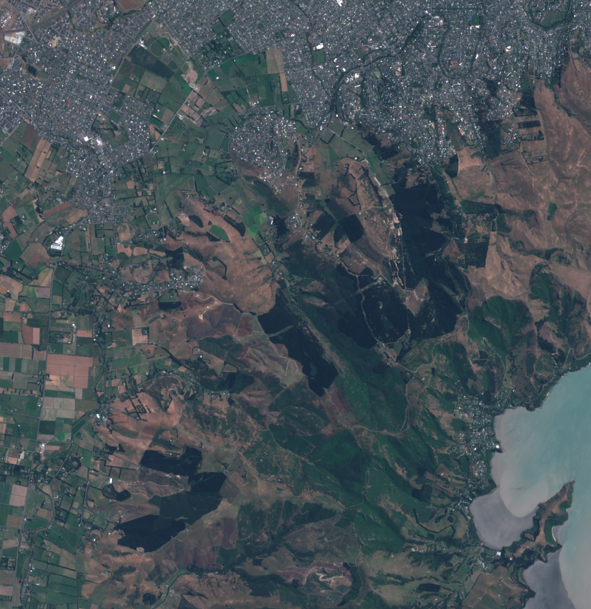
These are ordinary photos from space — no tricks, no false colour. Click through and watch the same hills: from green, to smoke on the day it started, to a black burn scar two weeks later, and a year on you can still see the mark. This is the whole fire, the way your own eyes would see it.
Sentinel-2 true colour (bands B4/B3/B2) · four dates Limit: the small white puffs are cloud, not smoke. The "before" frame is a Level-1C scene (no cloud-cleaned pre-fire image existed here yet); the others are Level-2A.
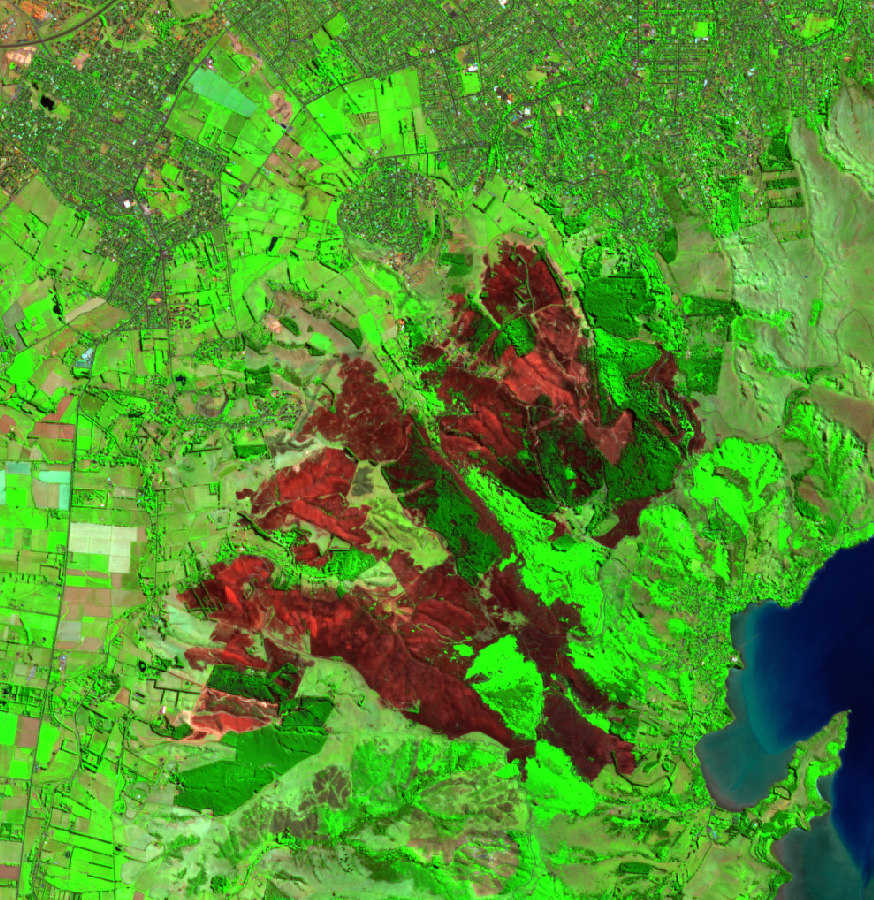
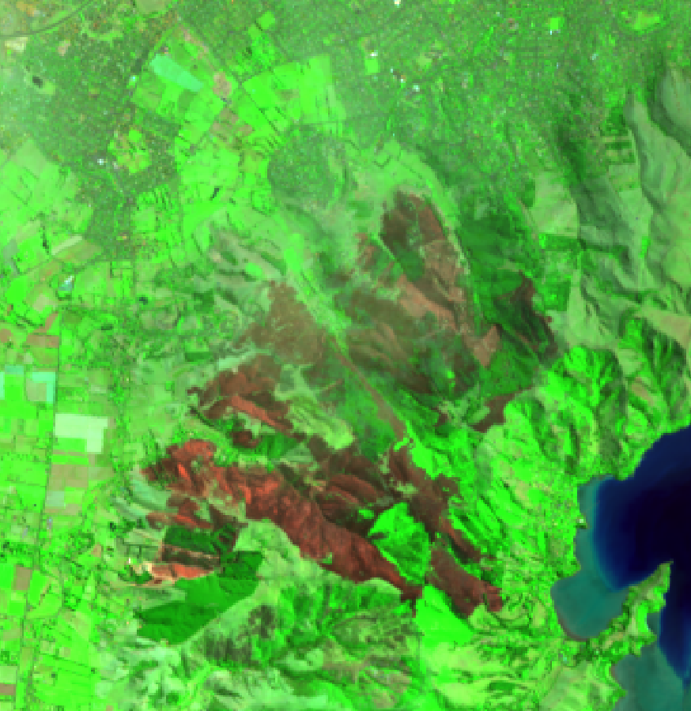
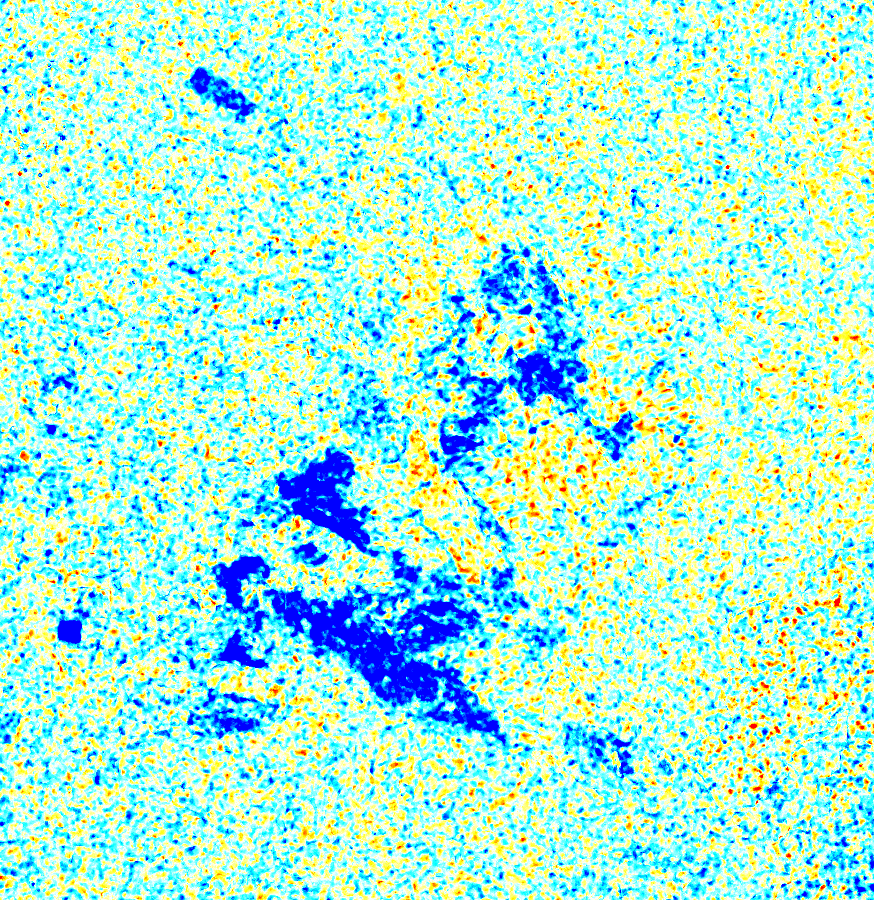
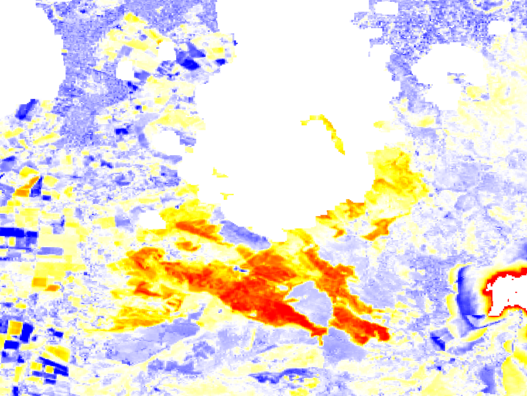
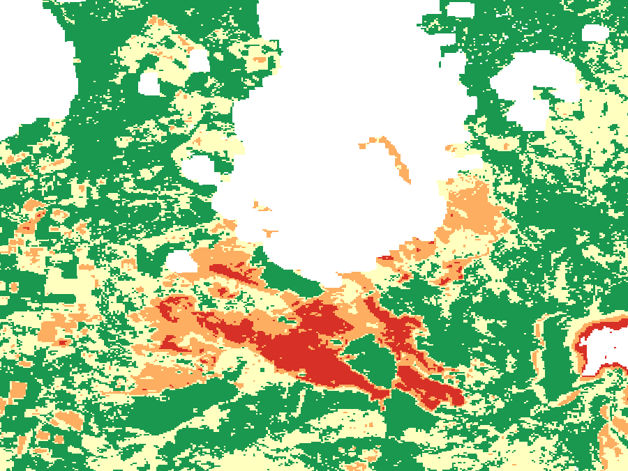
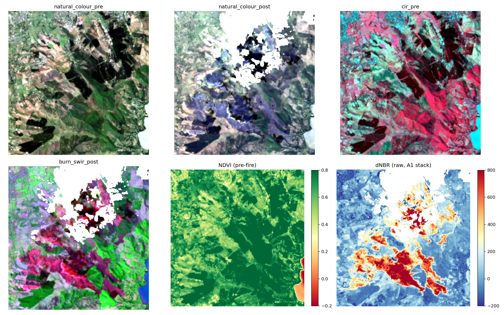
Every image above comes from two openly-searchable collections. The core calls, so anyone can reproduce them for any area and date:
import ee; ee.Initialize(project='genuine-hold-427410-f0') aoi = ee.Geometry.Rectangle([172.55, -43.65, 172.67, -43.56]) # DURING — Sentinel-2, ignition day (13 Feb) s2 = (ee.ImageCollection('COPERNICUS/S2_SR_HARMONIZED') .filterBounds(aoi).filterDate('2017-02-13', '2017-02-14').first()) true_colour = s2.select(['B4', 'B3', 'B2']) # natural colour swir_glow = s2.select(['B12', 'B8', 'B4']) # SWIR -> active fire glows # dNBR — Landsat 8, pre (8 Feb) vs post (24 Feb) def nbr(ic): img = ic.median().select('SR_B.').multiply(0.0000275).add(-0.2) return img.normalizedDifference(['SR_B5', 'SR_B7']) # (NIR-SWIR2)/(NIR+SWIR2) L8 = ee.ImageCollection('LANDSAT/LC08/C02/T1_L2').filterBounds(aoi) dnbr = nbr(L8.filterDate('2017-02-01', '2017-02-11')) \ .subtract(nbr(L8.filterDate('2017-02-24', '2017-03-30'))).multiply(1000)
Reuse: change aoi and the dates and this reproduces natural-colour, SWIR and dNBR for any fire with Landsat / Sentinel-2 coverage. For radar, swap in COPERNICUS/S1_GRD, band VH, pre- vs post-fire.
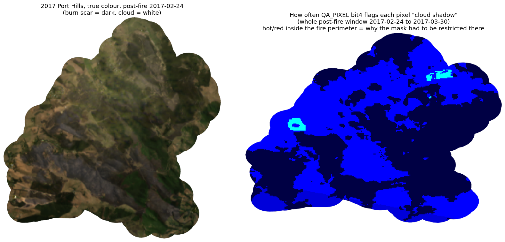
QA_PIXEL bit-4 flags each pixel as "cloud shadow" across the whole post-fire window. The perimeter fills with blue: char keeps getting called shadow. 👤 Yu · script 25Fresh char is spectrally dark — almost indistinguishable from cloud shadow to an automatic QA flag. A naïve mask therefore deletes exactly the pixels that burned hardest. The fix: mask cloud everywhere, but keep the "shadow" flag only outside the fire perimeter. Inside, dark means char, not shadow.
Limit: assumes no genuine cloud shadow falls inside the perimeter. A 500 m outward buffer absorbs most edge cases; residual error is expected to be small.
The QA logic, straight from the source. Cloud (bit 3) is masked everywhere; shadow (bit 4) is masked only where the pixel is not inside the fire.
// QA_PIXEL bits: 3 = cloud, 4 = cloud shadow function maskL8clouds_QA(image) { var qa = image.select('QA_PIXEL'); var inFire = ee.Image.constant(1).clip(aoi).mask(); var bad = qa.bitwiseAnd(1 << 3).neq(0) // cloud: everywhere .or(qa.bitwiseAnd(1 << 4).neq(0).and(inFire.not())); // shadow: outside only return scaleSR(image).updateMask(bad.not()); }
Reuse: swap aoi for any fire perimeter and this keeps char inside while still cleaning cloud — works for any Landsat C2L2 burn where fresh scar is being lost to shadow flags.
Unburnt vegetation should read dNBR = 0. But the pre- and post-fire composites are weeks apart, so seasonal and atmospheric drift push it off zero. A control ring around the fire (inner 500 m, outer 2 km), matched to the fire's own elevation and slope range, with Dynamic World excluding cropland and water, gives the true baseline — subtracted from the whole scene.
Limit: the offset is a single ring-wide mean; individual pixels may keep a small residual bias.
dNBR distribution of unburnt control ground (mean 83.6, s.d. 64.4). Before: the whole distribution sits shifted right — seasonal & atmospheric drift. After: subtracting the offset slides it back so 0 truly means "no change". Toggle to watch it move. 🤖 grid
A direct Python port of the A1 JavaScript compute steps, written so the numbers that only ever lived in the GEE console (offset, threshold, refugia area) become reproducible output anyone can re-run.
# control ring matched to the fire on elevation, slope, cover ring = aoi.buffer(2000).difference(aoi.buffer(500), 1) ctrl = dnbrRaw.updateMask(controlMask).reduceRegion( reducer=ee.Reducer.mean().combine(ee.Reducer.stdDev(), None, True), geometry=ring, scale=30, maxPixels=1e9) offset = ee.Number(ctrl.get('dNBR_mean')) # → 83.6 (per-class: trees 65 / shrub 84 / grass 119) dnbr = dnbrRaw.subtract(offset) # now 0 = no change
Reuse: run on any GEE-authenticated machine — python 26_A1_python_port_get_numbers.py prints offset, threshold T, commission error and unmapped-refugia area for the AOI. Point ASSET_ID at your own fire boundary to reuse wholesale.
We looked at all 18,581 cells (each 30 × 30 m). Most look alike; a few stand out. The real question isn't "are they weird" — it's "are they a mistake, or real ground?" Every odd one here turns out to be real: dense broadleaf/gorse scrub, bright bare soil, deep shade, or steep cliffs. So we keep them and just label them — throwing away real ground would only hide the truth.
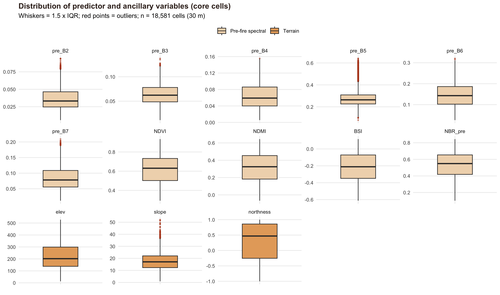
pre_B5 (near-infrared). Checking them against the reference points overturns the obvious guess: the high-NIR cells are dense broadleaf & gorse scrub (broadleaf 18%, gorse 12%) — not pine; pine actually has the lowest NIR (median 0.222), because clumped conifer needles shade one another (Ollinger 2011). Nothing is broken; it's real vegetation. 🤖 04_A3_outliers · stackA3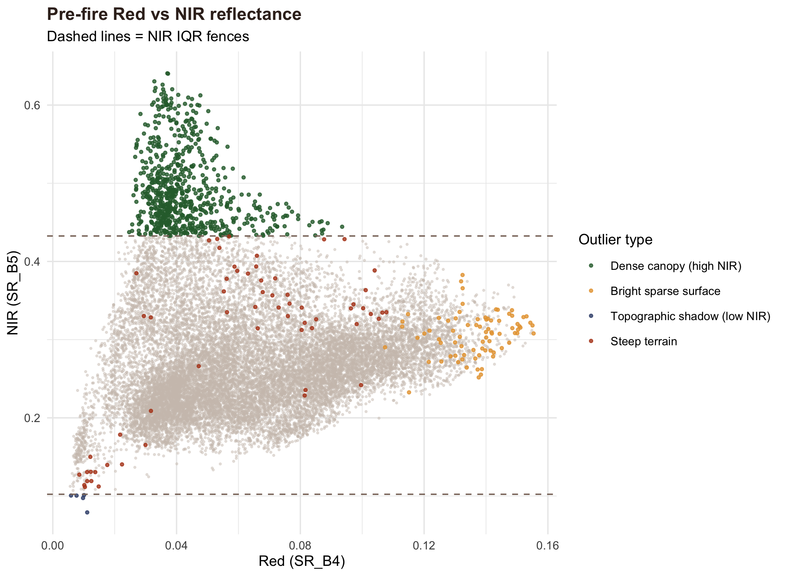
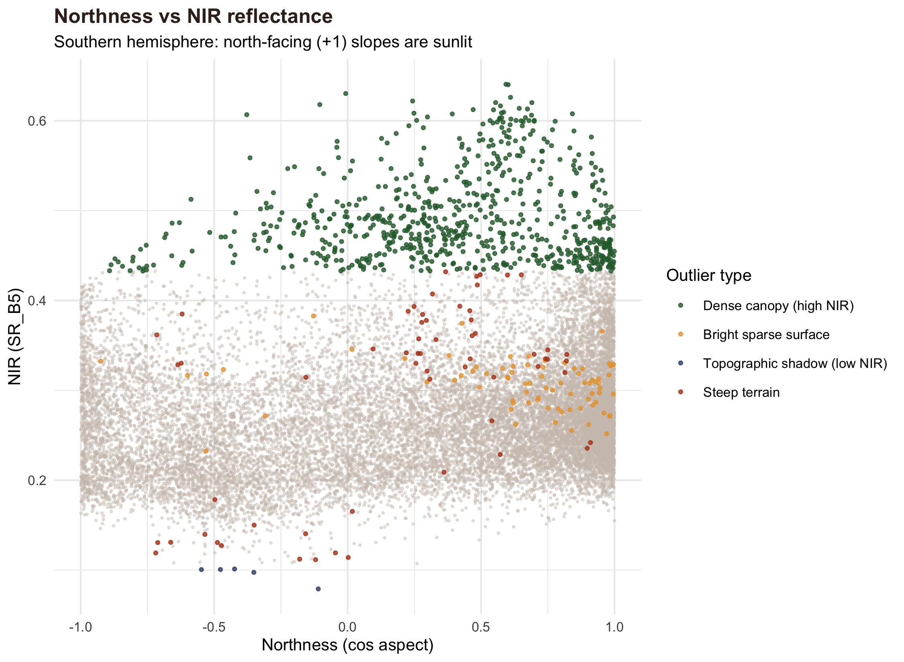
The decision: keep every one, just label it. None are sensor errors — they're real forest, soil, shade and cliffs. Deleting real ground would bias the results, so we flag instead. (Same rule as the dark-char cells earlier: flag, don't delete.)
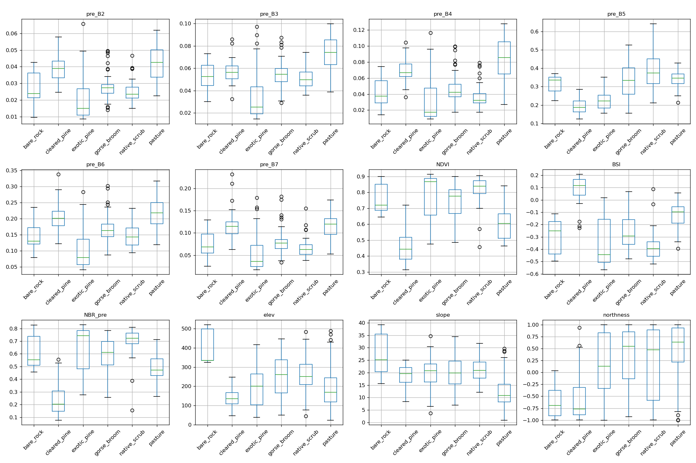
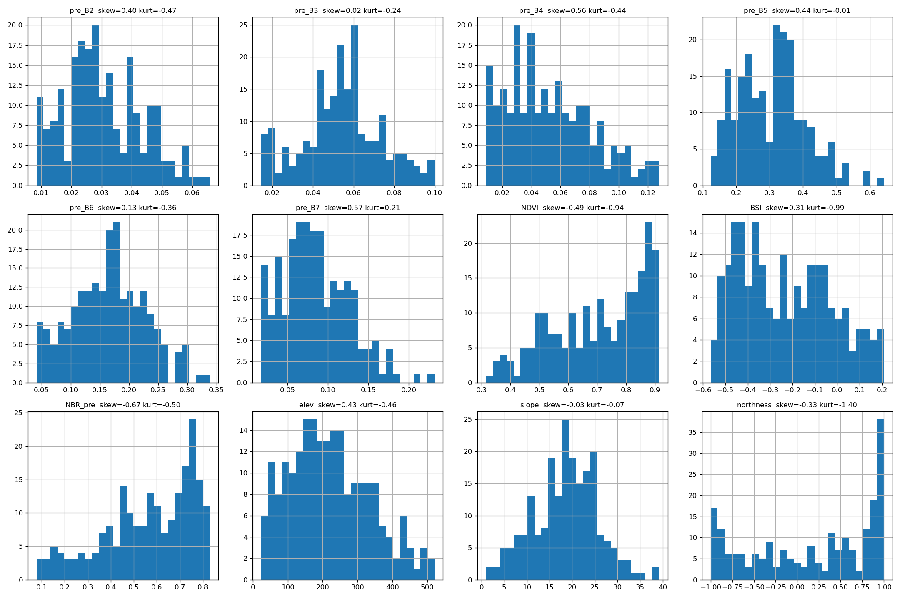
northness has a peak at each end — which mixed-class skew/kurtosis simply can't detect. The picture is what forced the per-class test. 🤖 03d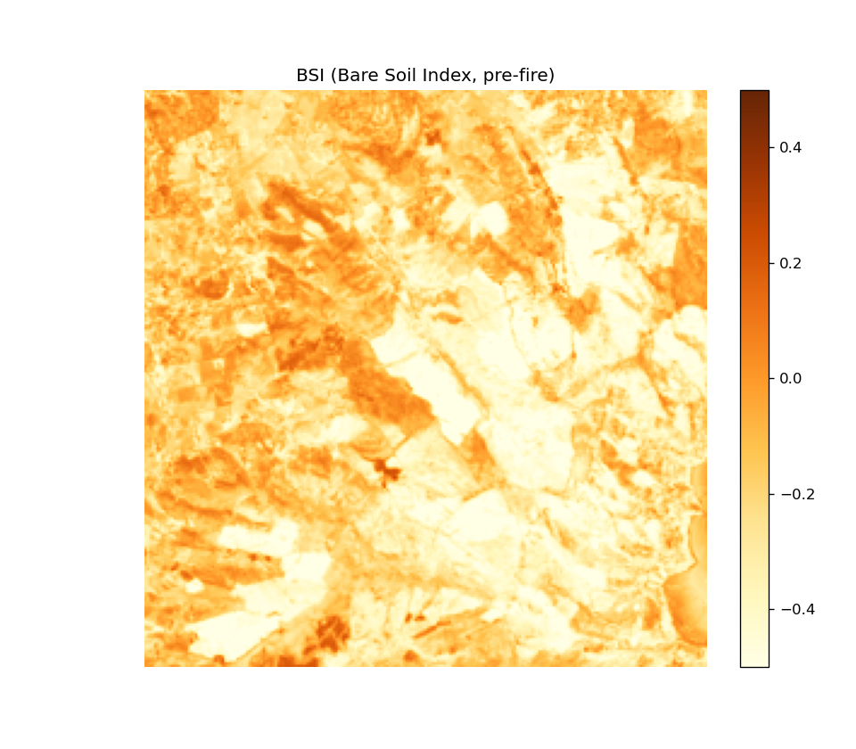
Correlation, regression, and an honest test of a state-of-the-art alternative. The headline: pre-fire greenness and bare soil pull hardest — and the answer is robust to the method you choose, with one telling exception.
Correlation with dNBR (burn severity). Toggle the method: only pre_B4 changes its significance verdict — every other variable keeps its rank and sign. Values shown are point-based; the whole-grid correlation table is pending. 🤖 04e
Across the whole 30 m grid (spatially thinned, ~1,000 cells), pre-fire spectral + terrain variables explain R² = 0.23 of burn-severity variation — modest, and honest. An earlier point-based 0.41 was inflated by a small sample sitting in polygon cores (at n ≈ 64 it jumps to 0.46). Residuals still carry spatial structure (Moran's I 0.63 at 120 m), so GWR is the next step. A second layer — adding FuelClass on the reference cells to test ΔR² — is pending.
VIF cleanup: raw bands hit VIF 47–99. Iterative dropping settled on 6 variables (pre_B2, pre_B5, NDMI, elev, slope, northness), all VIF ≤ 7.5.
RBR (Parks 2014) relativises dNBR by pre-fire biomass, and our fuels span bare rock to dense pine — exactly its design case. Run side by side: RBR R² = 0.304 vs dNBR 0.322. It did not help. We report that and keep dNBR. (point-based; grid rerun pending.) 📖 Parks 2014 🤖 04f
Both severity metrics regressed on the same 11 predictors, so the comparison is clean — no cherry-picking which one looks better.
df["RBR"] = df["dNBR"] / (df["NBR_pre"] + 1.001) # Parks 2014 for Y in ["dNBR", "RBR"]: model = sm.OLS(df[Y], sm.add_constant(df[PRED])).fit() print(Y, "R2 =", model.rsquared) # dNBR 0.322 · RBR 0.304
Reuse: reads the shared point table; drop in any burn-severity column and predictor list to benchmark a relativised index against the raw one on your own data.
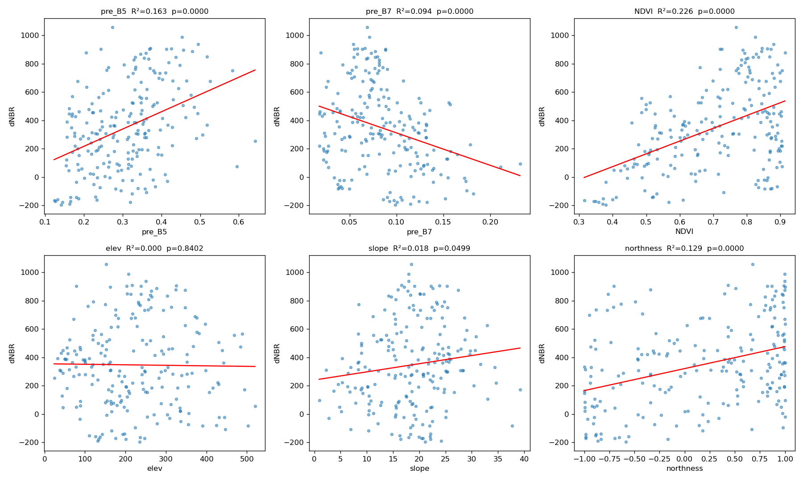
A Random Forest over four vegetation fuel classes, trained on 2015 aerial photo-interpretation and spatially blocked so validation can't cheat. Where the model struggles, the separability analysis already predicted it would.
Before training any classifier, unsupervised k-means asked whether the vegetation types are separable at all. It flagged the gorse_broom ↔ broadleaf_scrub overlap right at the start — the same pair the 6-band JM (only 0.79) would later put a number on, and the same pair the final confusion matrix confirms. The worry was earned, not incidental.
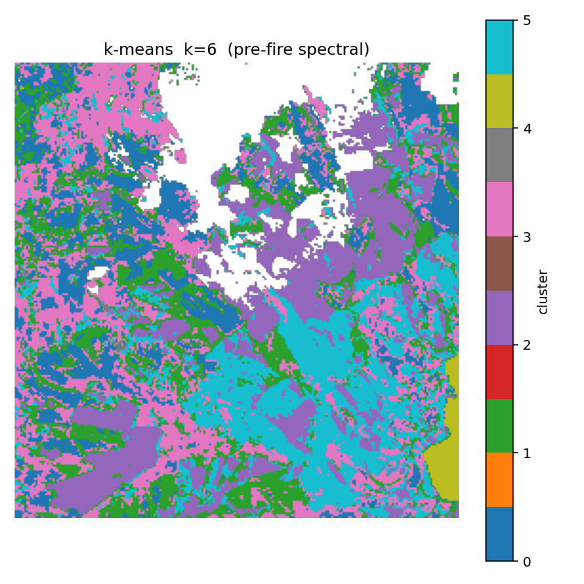
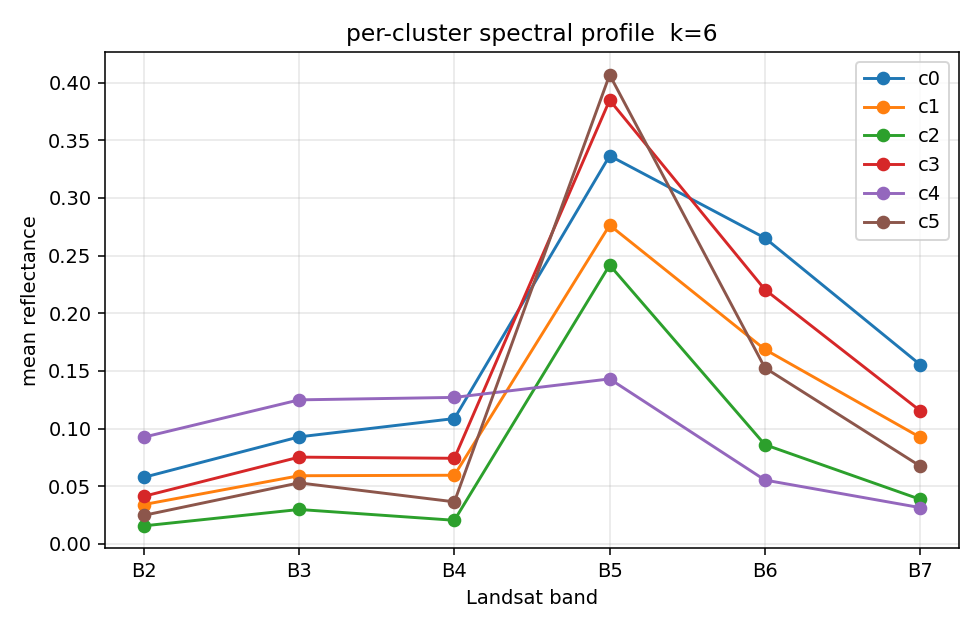
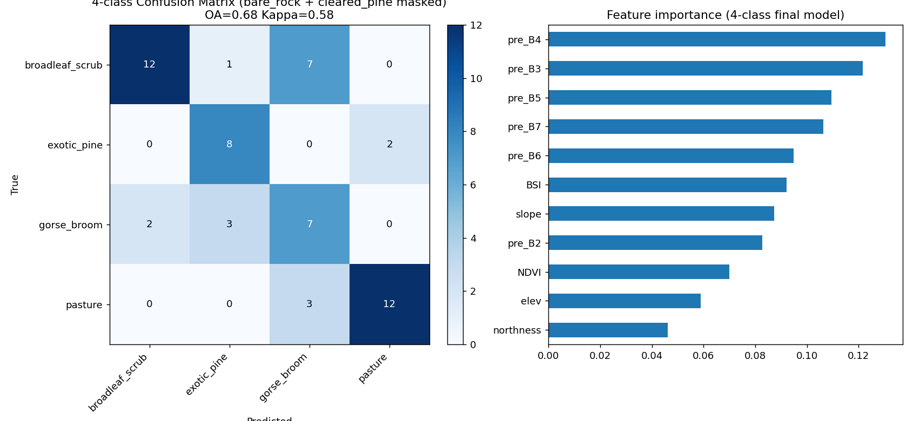
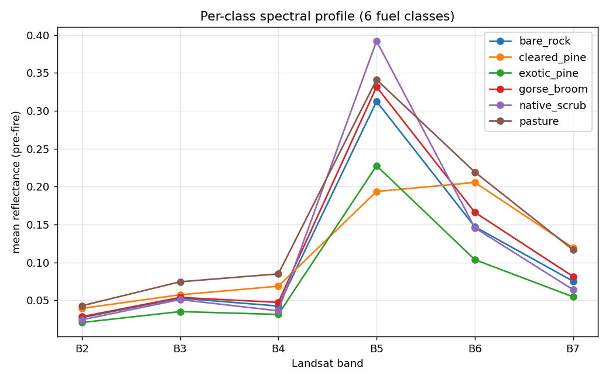
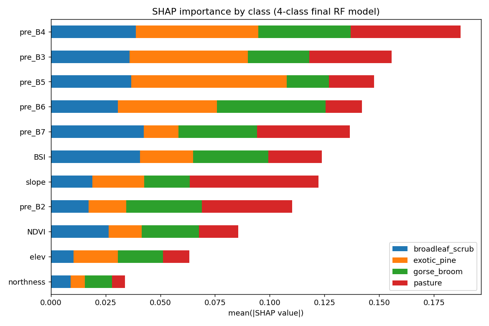
slope ranks 7th globally by Gini importance — easy to dismiss. But split by class, it's the number-one feature for pasture (flat ground = paddock). Averaging across four classes drowned it out.
pre_B4 (red) is the top global variable, but SHAP shows its sign flips: strongly positive for pasture (+0.94 — bright grass), negative for the other three. A single importance number hides that entirely.
This is the finding the whole project was for. Using two hand-drawn unburnt islands as an independent reference, a defensible threshold separates burnt from unburnt — and then finds far more unburnt ground than anyone mapped by eye.
The 90th percentile of dNBR inside the known unburnt islands — "90% of confirmed refugia stay classed unburnt". Otsu was tested and rejected (it cut inside the burned group). Commission error at T: just 3.0% (2×SD would give 128.9). Per-class offset lowers it to T = 114.9. 🤖 grid
Two hand-drawn islands, checked separately: 85.1% and 95.3% of their pixels correctly classed unburnt, mean dNBR −13.9 / −21.1 (below baseline = genuinely unburnt). The reverse also holds: 88.1% of officially-burnt ground is classed burnt. 🤝 CSV + 26
Move T by ±50 and the burned-area estimate shifts. Drag it yourself below — the threshold genuinely matters, and hiding that would be dishonest.
The chosen T = 118.7 is the 90th percentile of dNBR inside the known unburnt islands — it sits in the middle here. Slide it and burned area moves around the central estimate of 1,268 ha (end-point values approximate, exact grid rerun pending). 🤖 grid
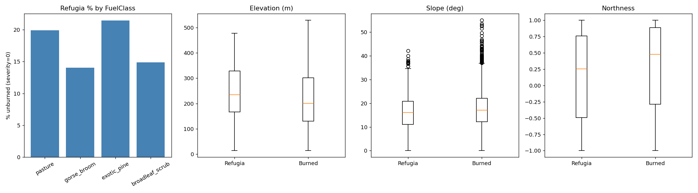
exotic_pine 21.4% ≈ pasture 19.9% > broadleaf_scrub 14.9% ≈ gorse_broom 14.0%. Across 17,519 pixels, refugia sit higher (247.9 vs 219.2 m), on gentler slopes (16.1° vs 17.5°) and less north-facing (0.13 vs 0.28) ground — every direction matching fire-ecology expectation (Welch t, p < 1e-20). 🤖 12 · 13Limit: the 175.3 ha is a total-area difference, not each patch verified one by one. Confirming a sample against aerial photos — to rule out bare rock or shadow posing as "unburnt vegetation" — is the next step before calling all of it true refugia.
The pipeline doesn't depend on this particular fire. Here's what transfers as-is, and the specific data that — based on what was actually missing here — would push it further.
Landsat 8 composite (cloud mask + scaling) → LCDB + aerial labels, with cleared_pine defined by Hansen forest-loss ∩ vegetation polygon (change-data instead of spectral guessing — works for any Hansen-covered forest fire) → 15 m pixel-purity check (half a Landsat pixel; drops straight into any 30 m task) → spatial-block split (kills spatial autocorrelation) → exploration, regression, RF → wall-to-wall classify + clip to true perimeter → refugia × vegetation × terrain. None of it is Port-Hills-specific.
Sentinel-2 red-edge & spring imagery → lifts the gorse/broadleaf JM from 0.79 to 1.45 and gorse recall from 41% to 49%, and unlocks a full-year phenology series (2016 had a clean image every month). 🤖 grid
Pre-fire LiDAR (CHM + texture) → literature shows ~14% accuracy gain; the best shot at the gorse↔broadleaf confusion.
More post-fire revisits → 16 of 19 cleared_pine points hit cloud; more satellites = fewer lost pixels.
Fine-scale fuel-moisture / wind fields → station data is too uniform across a few km²; a modelled field would add a variable class that's currently absent.
Source tags throughout: 📖 literature 👤 Yu's own work 🤖 computed here 🤝 joint